April 28, 2013
| A walk to remember. |
|
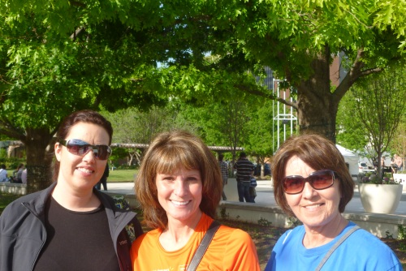 |
Desirae, Levita, and Mom in downtown OKC after we picked up our packets at the Expo. Also after I successfully resisted the urge to |
|
Dinner that night was at Hideaway
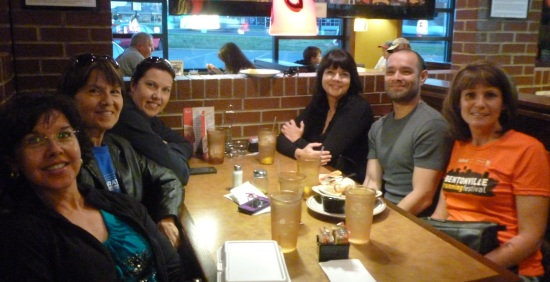
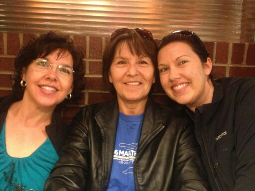 Here I try to act like I don't know them. |
|
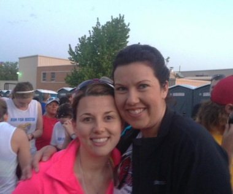 Nancy and Desirae - barely awake so they don't know what |
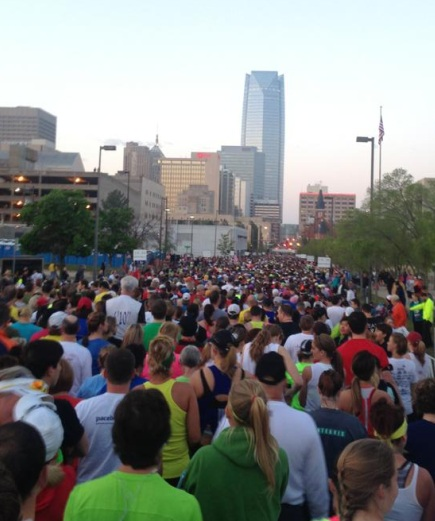 |
| Looking toward the starting line - we're not quite at the front. | |
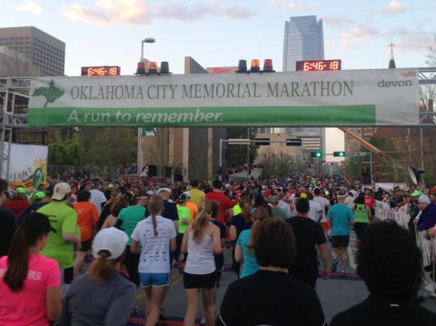 |
|
| It took 16 minutes to get to the starting line, what a lot of people!! | Walking near the State Capital on that beautiful morning |
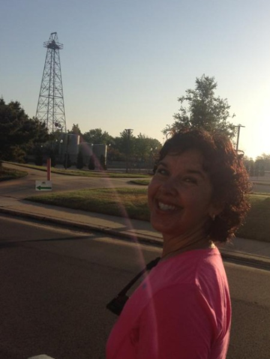 |
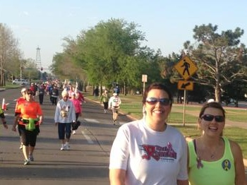 Smile-o!! |
| We were nearing Mile 3 at this point - life is good. | |
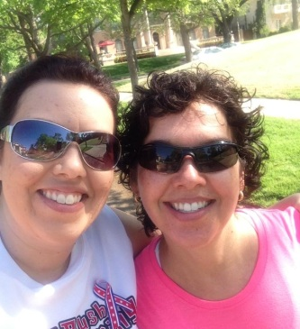 |
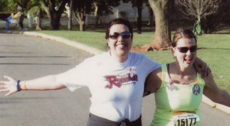 Hamming it up for the race photographers |
| Happy sisters | |
|
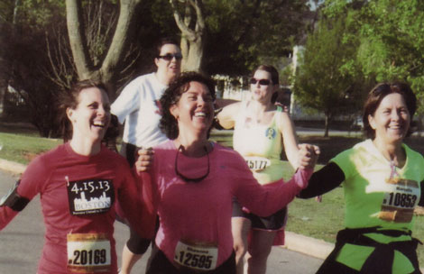 It's OK, you can say it - I look like I'm in the Special Olympics here. Julie & Mom grabbed my hands and I guess I convulsed
or something. The pictures peter out at this point because after mile
10 the fun pretty much ended. |
|
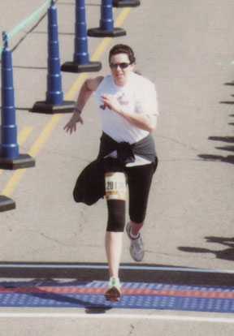 |
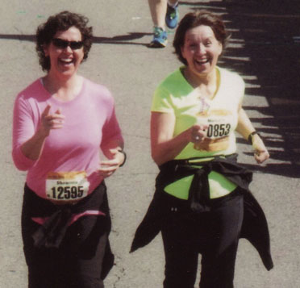 |
| Desirae kicked it into super high gear at the end. It was amazing, she was a speedster! Her feet aren't even on the ground in this shot. |
Me & Mom, cracking up as we crossed the finish line.
I was pointing at Desirae "The Rocket" Bloomer who was WAY |
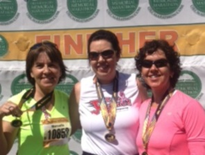 |
|
| We feel better now, and are so glad we did it. | |